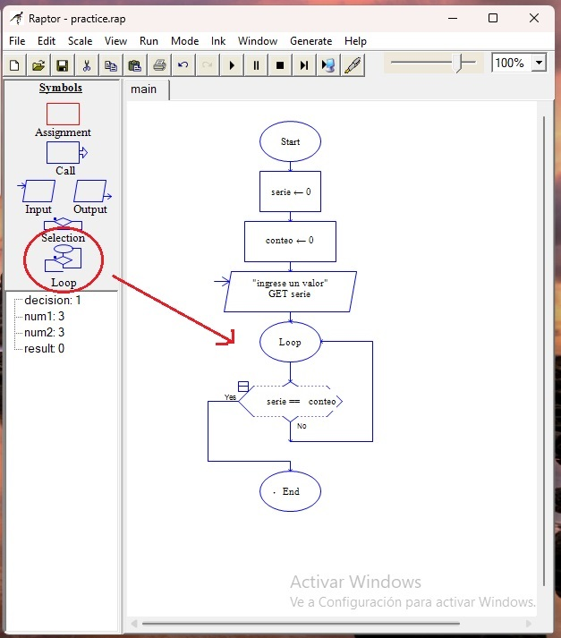

Bucles.
Los también llamados CICLOS o LOOPS son repeticiones; procesos que se repiten hasta que alguna condición se cumple. Un ejemplo podría ser que cambiemos de canal hasta encontrar lo que buscamos, la condición sería el canal de noticias, y hasta encontrar el canal de noticias, repetiremos el proceso de cambiar de canal.
Claro que un ejemplo lo muestra de forma más clara:
Vamos a construir un programa que muestre en pantalla una serie numérica, una simple, del uno al diez. Usaremos dos variables, a una le llamaremos "serie" y a la otra "conteo", ambas con valor cero. También usaremos un "input" para permitir al usuario ingresar datos desde el teclado.
Y por último, arrastramos el símbolo "loop" hasta el final de nuestro panel (bueno, al final, pero antes del elemento "end")
Este "loop" también tiene una rama "yes" y una rama "no". En la primera, la condición se cumple y finaliza el programa, como en "selection", pero en la rama "no" se reinicia el proceso.
El usuario va a guardar un valor en la variable serie mediante el "input", luego en el rombo establecemos la condición.
